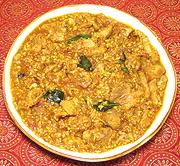

|
Chicken Coconut ChettinadIndia - Tamil Nadu - kozhi varatha kosambu | ||||
| Serves: Effort: Sched: DoAhead: |
2 main *** 2 hrs Most |
A flavorful curry from Tamil Nadu, the southern tip of India. Note that chicken is very expensive in India and generally reserved for special occasions. This recipe can be prepared even a day ahead up to adding curry leaves and lime juice. | |||
| I make this recipe more liquid than they might in India because for me it's not just an item on the thali, it's a main dish with rice so I like a little more sauce. | |||||
|
1-1/4 4 1 ------ 1/2 1 2 2 1/3 1/3 ------ 5 14 2 1/4 2 3 1/3 1/2 1/2 2/3 1 5 ------ |
# oz t --- t in t t --- oz oz cl in t T T t T c --- |
Chicken meat (1) Coconut, fresh (2) Poppy Seeds (3) -- Spices Fennel Seed Cinnamon Stick (4) Cardamom, green Cloves Turmeric Garam Masala (5) --------- Onion Tomatoes Garlic Ginger Root Lime Juice Oil Star Anise Chili Powder (6) Salt Water Water (more) Curry Leaves (7) -- Garnish Cilantro Leaves |
PREP - (40 min)
|
imc_chkcocnut2 120303 gci118 - www.clovegarden.com
©Andrew Grygus - agryg@aaxnet.com - Linking to and
non-commercial use of this page is permitted.